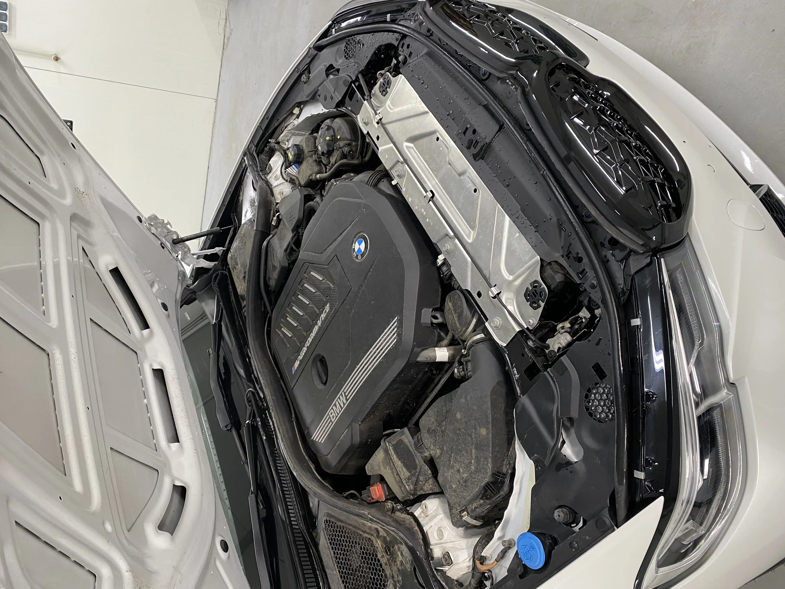
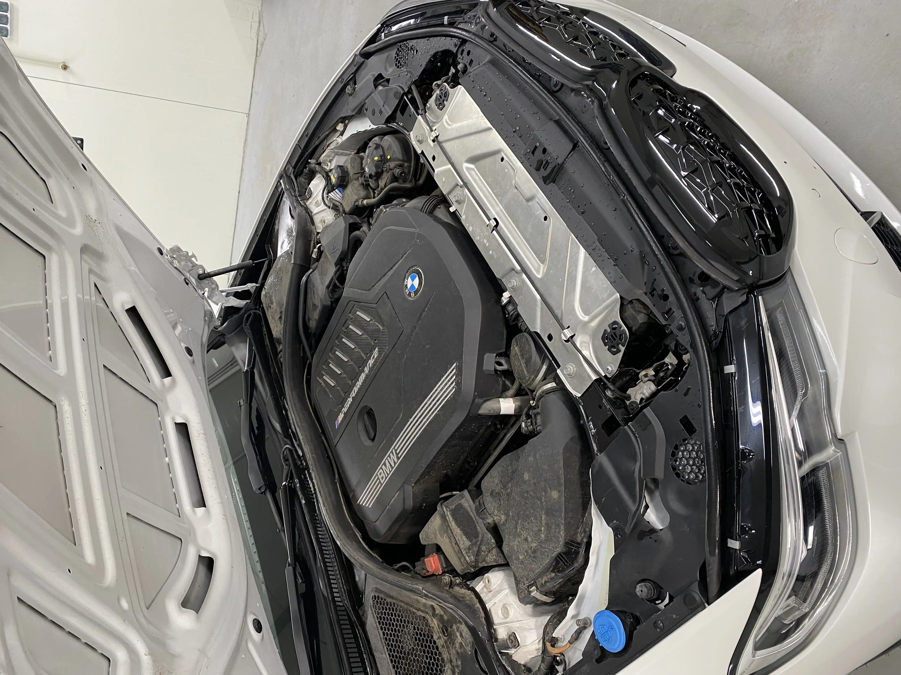

Mycie ręczne
Mycie ręczne obejmuje pełne mycie zewnętrza samochodu z woskowaniem, oraz pełne czyszczenie środka (odkurzacz, mycie plastików, siedzeń, szyb).
Cena od 350 zl netto
Mycie detailingowe
Kompleks mycia detailingowego składa się z mycia zewnętrza samochodu oraz pełne czyszczenie lakieru od bitumu, wtrąceń metalicznych i t.d. z woskowaniem karoserii. Wnętrza samochodu również zostanie pełne wyczyszczone.
Cena od 500 zl netto